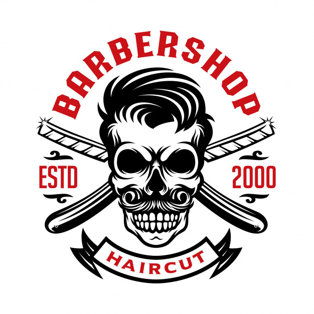
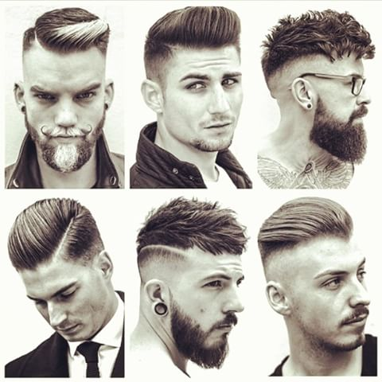

Una de las técnicas más apreciadas y solicitadas a nivel internacional para cortar el cabello es la de grados de elevación, ya que se puede aplicar a cualquier estilo de cabellera una vez que son dominados los grados, sin importar su forma, su largo o los acabados. Además, sus aplicaciones se extienden a otros procesos. En nuestros institutos profesionales es muy común encontrar que todo el alumnado ha sido adiestrado con esta técnica, pues se basa principalmente en el uso de un transportador que se coloca sobre la cabeza y con él se determinan las diferentes posiciones que marcan los grados de elevación y que dan por resultado un efecto determinado.
|  |  |
Las mujeres son bellas por naturaleza, pero es verdad que cuando utilizan el maquillaje dan un cambio total y dejan asombrado a quien sea, y muchas veces sin importar qué look es el que lleven en ese día, el maquillaje da un realce a su belleza.
Los hombres, para demostrar que también tenemos nuestros dotes atractivos no tenemos otra manera de hacerlo más que en nuestra manera de vestir y por supuesto, con un buen corte de cabello. Es por eso que elegir el ideal y el que se encuentre siendo tendencia, sería un punto más a nuestro favor.


UNIVERSIDAD GERARDO BARRIOS